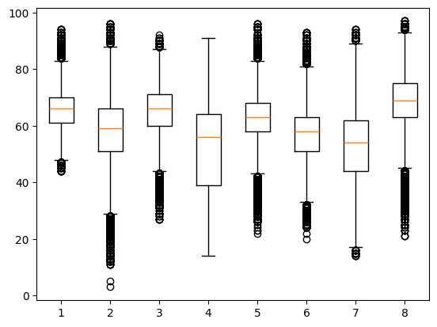
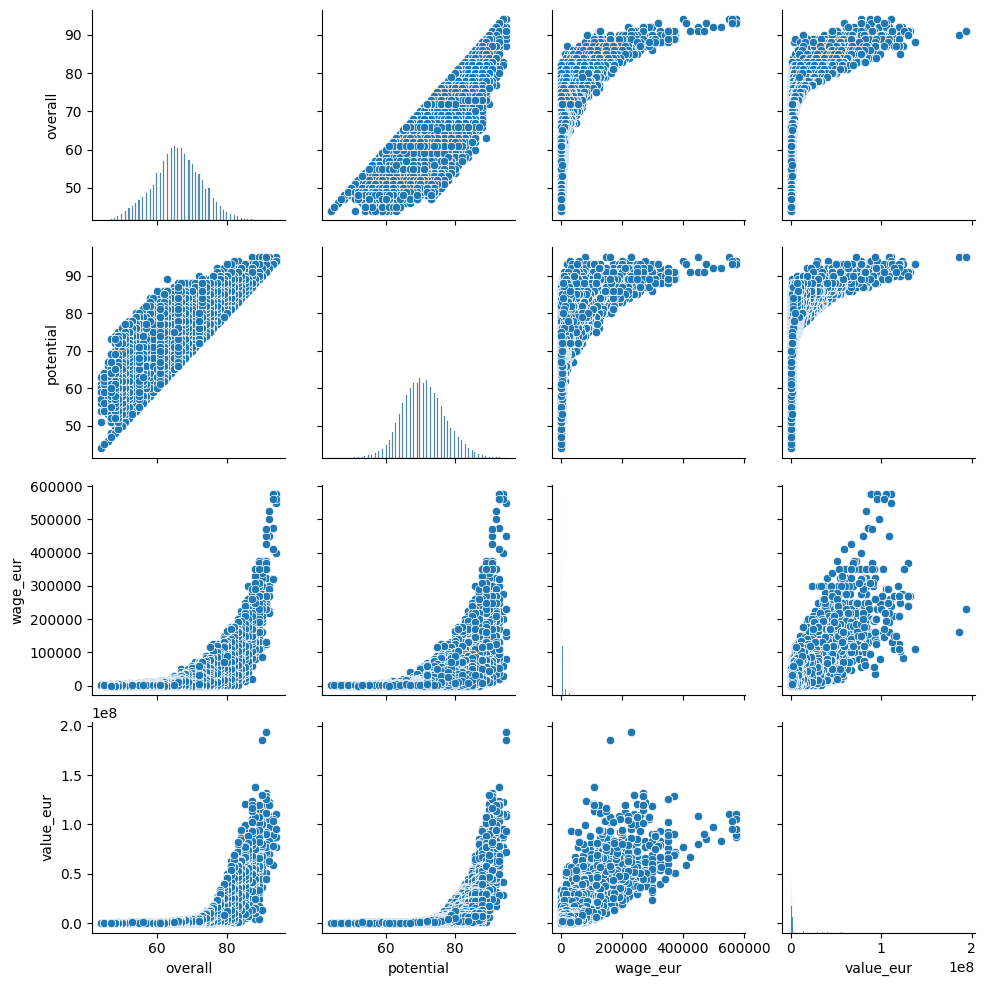
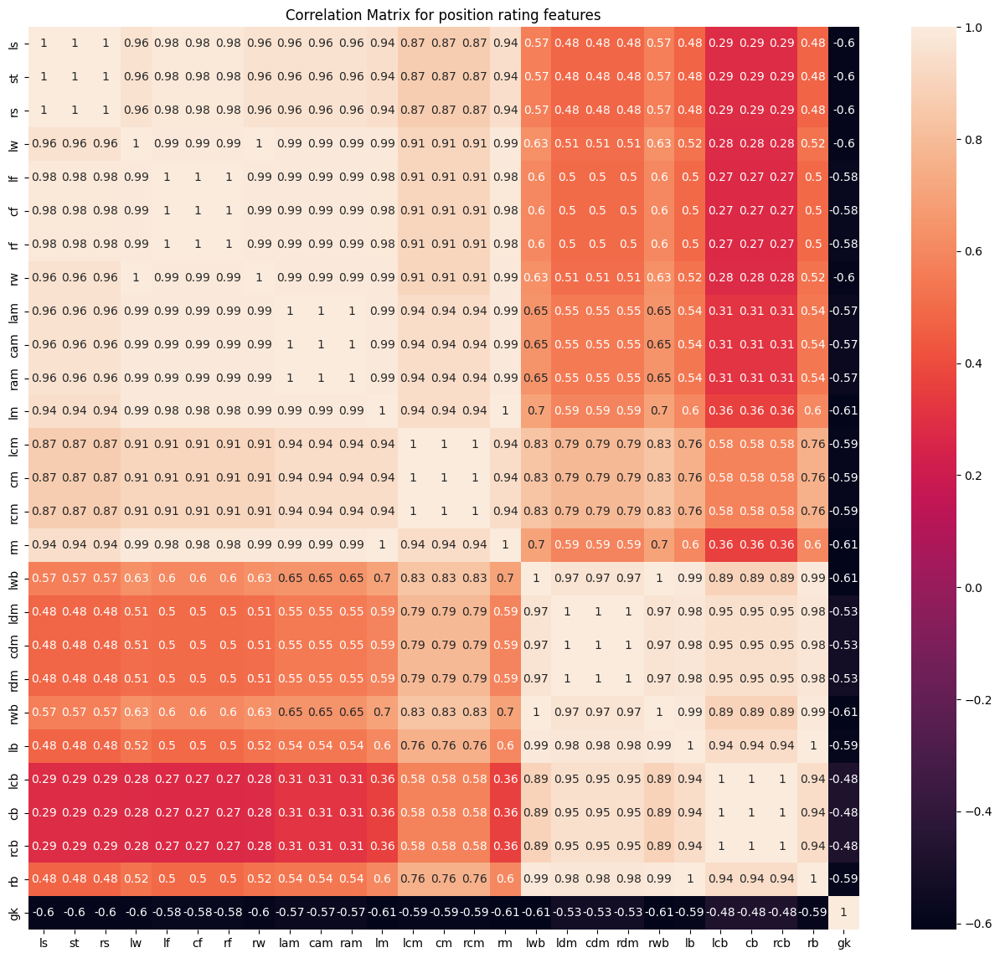
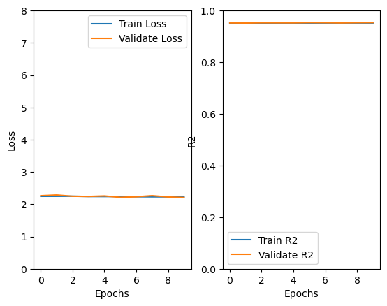
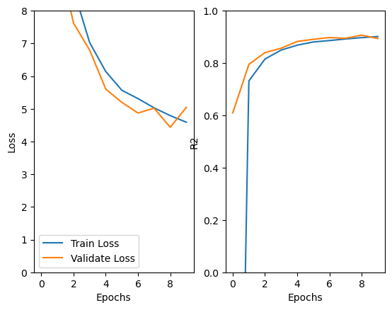
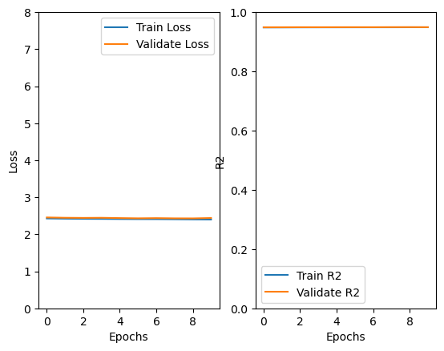
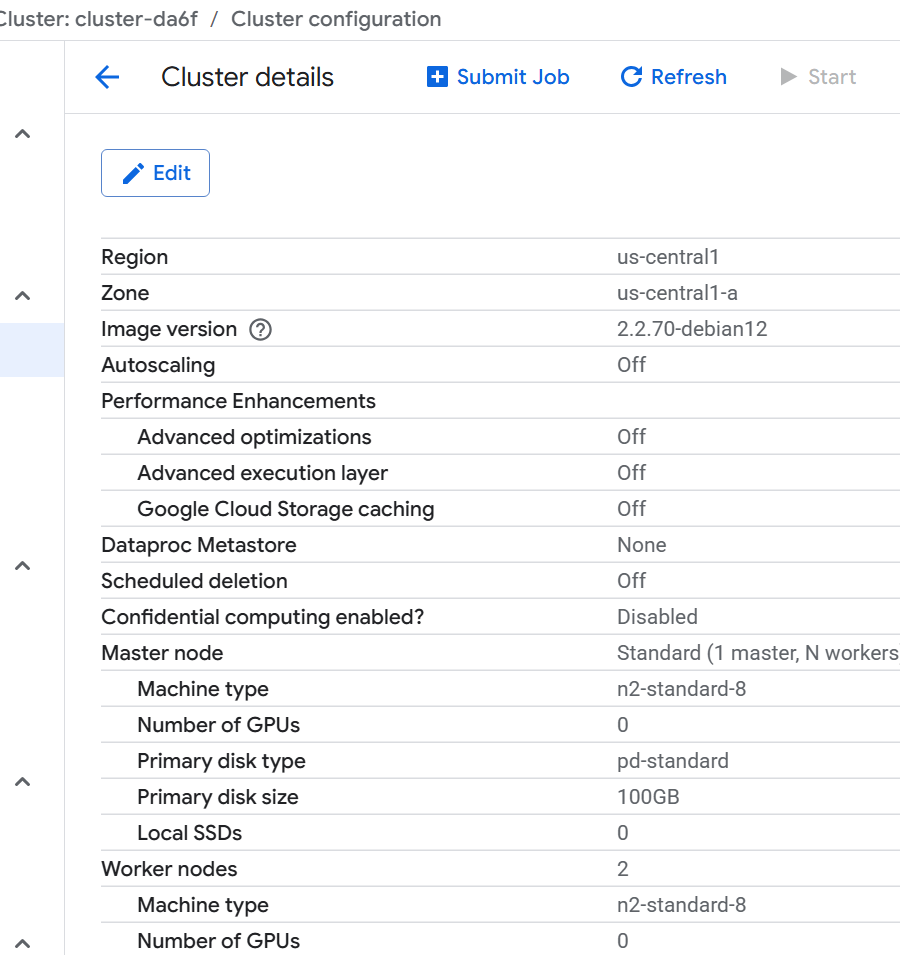
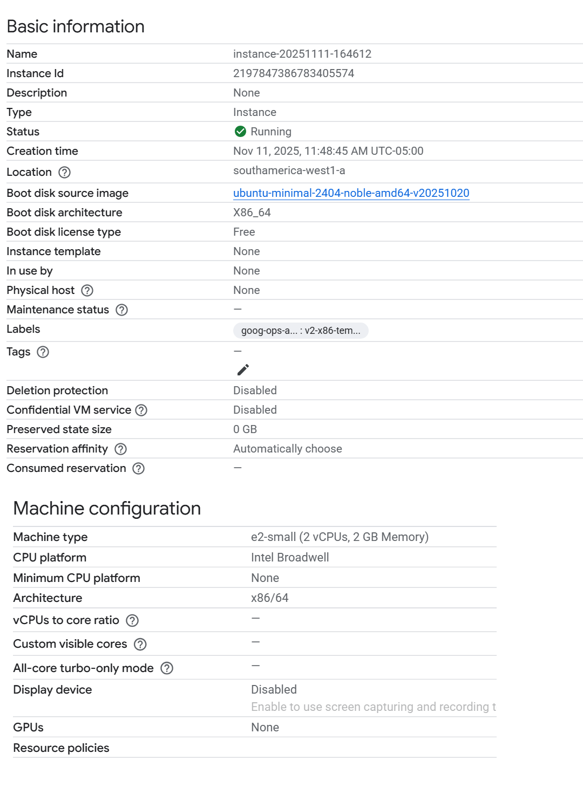
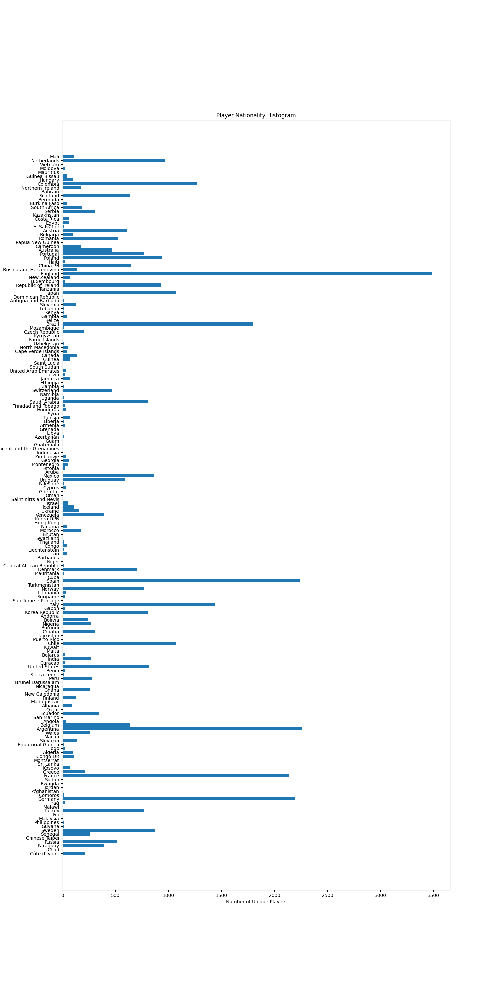

Predicting FIFA Player Ratings at Scale
Overview
Every player in EA's FIFA/FC series gets a single number - an Overall rating - that summarizes dozens of underlying attributes into one score scouts, fans, and the game's own AI all treat as ground truth. This project set out to reverse-engineer that number: given a player's raw attacking, defensive, physical, and skill stats, how well can it be predicted, and what does the process of building that prediction system end-to-end actually involve?
Using SoFIFA player data spanning men 's rosters from FIFA 2015–2022 and women's rosters from 2016–2022 (sourced via Kaggle, roughly 100 ra w attributes per player-year across nine years), the project became less about a single model and more about building the whole path data takes on its way to becoming a prediction: a relational database to hold it, a distributed pipeline to clean and engineer it, a real-time stream to complement it, several very different model families to learn from it, and cloud deployment.
Data Storage and Management
This project uses the FIFA 22 Complete Player Dataset from Kaggle as its primary data source.
The first real decision was where this data should even live. Player records are fundamentally per-entity statistics - Messi's dribbling rating isn't a relationship between two things, it's just a fact about Messi - so a relational database made more sense than a graph store like Neo4j, where the node/edge model would have gone mostly unused. PostgreSQL became the system of record, with a `fifa.players` schema built out and a JDBC connection bridging it to PySpark for everything downstream.
Data Cleaning and Feature Engineering
With around 100 features per player, the first job was figuring out which ones actually mattered and which were noise, duplicates, or artifacts. Box plots across some continuous features surfaced how differently distributed some of these stats were before any cleaning happened.

A pairplot of Overall, Potential, Wage, and Value made the relationships between the "headline" numbers immediately visible: Overall and Potential track each other almost linearly, while both wage and market value show the classic hockey-stick shape where a small group of elite players are paid and valued disproportionately to everyone just below them.

The dataset also carries a separate rating for every position a player could occupy (striker, winger, center back, goalkeeper, and everything between) - roughly 27 position-specific columns. Rather than eyeballing a 73-feature correlation matrix, the full correlation table was exported to CSV and features above an R² of 0.8 were treated as redundant and pruned. Zooming into just the position ratings shows exactly why: attacking positions like LS/ST/RS/CF/RW are correlated with each other at 0.98–1.0, while goalkeeper rating is negatively correlated with almost every outfield position - which makes intuitive sense, but is still worthwhile to see this confirmed numerically.

Real-Time Insights from YouTube Data
Player ratings are updated periodically, but conversation about players happens constantly, so a second, real-time path was built alongside the batch pipeline using Apache Kafka and the YouTube Data API. A producer script searches YouTube every 30 seconds for recent videos matching "fifa world cup," "soccer," "football," and "fifa," pulls top-level comments off of them, and pushes each new comment onto a Kafka topic (deduplicating by author + timestamp so the same comment isn't re-sent if it's still showing up in the next search window). A consumer script on the other end listens to that topic, and once the stream goes quiet for three minutes, it stops and cross-references every comment's text against the full list of player names in the dataset - turning a raw stream of YouTube chatter into a rough count of which real players people were actually talking about that day.
Machine Learning Engineering
With the Overall data feature framed as a continuous regression target, two frameworks were used side by side - partly to answer the question directly, and partly to compare how SparkML and PyTorch approach the same tuning problem.
SparkML handled a Linear Regression
and a Random Forest Regressor, both tuned with grid
search over 5-fold cross-validation. The best linear
model landed on regParam = 0.01,
maxIter = 25, elasticNetParam = 0
- essentially minimal regularization - and reached
R² = 0.9185 (test MSE 3.90). The
best Random Forest used numTrees = 150
and maxDepth = 10, and pushed that up to
R² = 0.9822 (test MSE 0.85).
Tree depth mattered far more than tree count:
going from depth 5 to depth 10 cut error by
roughly a factor of four, while adding more
trees helped only marginally once depth was
sufficient - the model needed to reach further
into the feature space more than it needed
more opinions at a shallow one.
PyTorch handled two neural nets built from scratch: a shallow network with a single 100-unit hidden layer (Linear → ReLU → Linear), and a deep network with five stacked 40-unit hidden layers. Both were trained on the same Spark-engineered features, streamed off disk in sharded MDS format for train/validation/test splits, with learning rate, batch size, and epoch count tuned by grid search. At matching hyperparameters (lr = 0.001, batch size = 200), the difference in convergence behavior was the most interesting finding of this half of the project: the shallow network was already flat and converged well within 10 epochs, while the deep network was still visibly descending its loss curve at the same point - more capacity meant more to learn before it stabilized, not necessarily a better final answer.

Shallow network (1 × 100 units) - converged almost immediately.

Deep network (5 × 40 units), same settings - still descending at epoch 10.
Once the deep network's best hyperparameters were found through the same grid search, it converged to a comparable final state - shallow validation loss bottomed out around 2.13 with R² ≈ 0.95, deep around 2.42 with a similar R². In other words, five extra layers bought essentially nothing on this feature set; the shallow network had already captured what there was to learn.

Google Cloud Deployment
The last stretch of the project was rebuilding the same pipeline - Postgres ingestion, PySpark feature engineering, both SparkML models, both PyTorch models - to run entirely on Google Cloud. A two-worker Dataproc cluster (master and workers both n2-standard-8, 100GB standard persistent disks, autoscaling off) ran the Spark workloads.

PostgreSQL itself moved to a small e2-small Compute Engine VM running Ubuntu, with Postgres running inside a Docker container rather than installed directly on the host allowing the database setup to be reproducible and disposable instead of hand-configured.

The modeling logic did not change between local and cloud - which was the point. The value of the Google Cloud piece was to confirm that the pipeline's architecture - the JDBC boundary between storage and compute, the Spark feature engineering, the sharded data hand-off to PyTorch - was actually portable, not just convenient to run on one laptop.

One of the earlier exploratory queries - unique players by nationality across all nine years of data, run straight off the Postgres-backed Spark dataframe.
Results Summary
Random Forest (SparkML): R² = 0.9822, test MSE = 0.85 · Linear Regression (SparkML): R² = 0.9185, test MSE = 3.90 · Shallow Neural Network (PyTorch, 1×100): R² ≈ 0.95, validation loss ≈ 2.13 · Deep Neural Network (PyTorch, 5×40): R² ≈ comparable, validation loss ≈ 2.42. The tree-based model performed best, the two neural networks landed in a near-tie with each other, and the linear model had the weakest performance, a sign of just how much of the model is dependent on a well-engineered feature set before any nonlinearity gets involved.
Key Takeaways
The biggest lesson was on the infrastructure decisions (relational vs. graph storage, JDBC connection handling, how data gets sharded between Spark and PyTorch) and how this ended up shaping the project more than the choice between a Random Forest and a neural network did. On the modeling side, more capacity wasn't automatically better: the Random Forest's jump in performance came from letting individual trees grow deeper, not from growing more of them, and the deep neural network's extra layers mostly bought slower convergence rather than a better ceiling. And the Kafka/YouTube stream was a useful reminder that "real-time" data rarely arrives clean - most of that code ended up being about deduplication and timeout handling, not the streaming logic itself.
Skills & Tools
Python · PySpark / Spark MLlib · PostgreSQL · JDBC · Apache Kafka · PyTorch · Google Cloud Platform (Dataproc, Compute Engine, Docker) · Pandas · Seaborn · YouTube Data API v3 · Feature Engineering · Regression Modeling · Grid Search & Cross-Validation · Distributed Data Processing
← Back to Projects